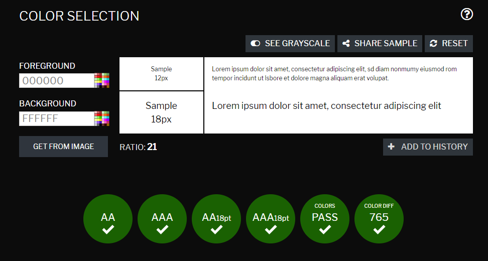
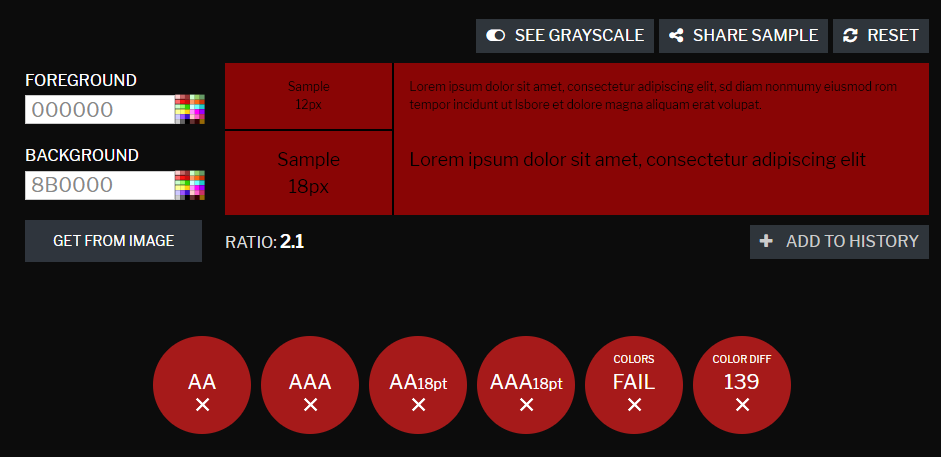
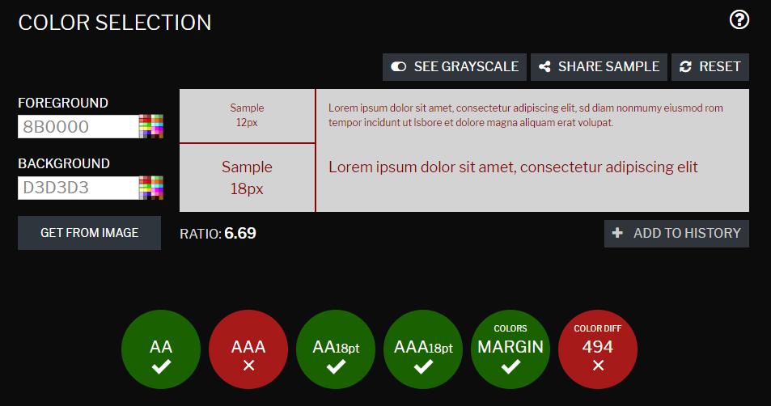
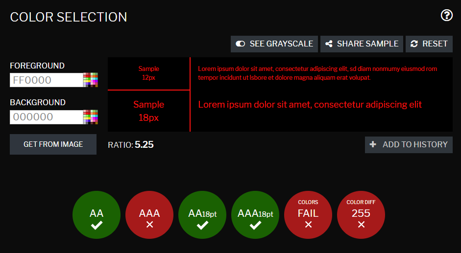
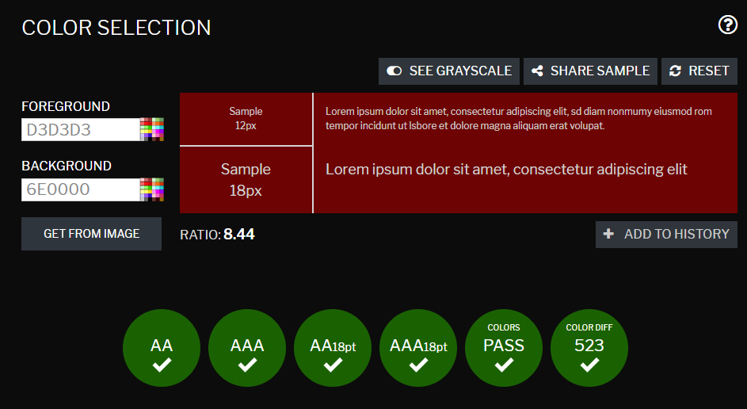

Dokumentation projekt Vt
1. Idébeskrivning
Jag ska göra en sida som recenserar olika spel där spelen blir bedömda på olika faktorer. Målgruppen är
spelintresserade vilket för det mesta är ungdomar men kan också vara äldre och yngre i alla åldrar.
2. Planering
2.1 Handskiss
2.2 Schema
| Vecka | På lektionen | Utanför lektionen |
| 4 |
-
|
-
|
| 5 |
Ide generering
|
-
|
| 6 |
Planering, Skiss
|
-
|
| 7 |
-
|
-
|
| 8 |
Börja koda
|
-
|
| 9 |
Koda
|
-
|
| 10 |
Koda
|
Ev. komplettering
|
| 11 |
Avsluta
|
komplettering!!!
|
| 12 |
Tester+Utvärdering
|
Det som inte är klart
|
3. Dokumentation
Lektion vecka 4
Var inte på lektionen
Lektion vecka 5
Under lektionen var jag inte så produktiv och hade svårt med idégenereringen.
Fick tillslut en idé och tills nästa lektion ska jag se till att göra klart min skiss för både mobil och desktop.
Lektion vecka 6
Denna lektionen så har jag färdigställt min skiss samt göra klart min planering. Skisserna blev bra då min kreativitet var
fungerande idag. Jag vet nu hur mina sidor ska se ut både för desktop och mobile och jag följer min tidsplanering. Nästa lektion ska jag börja med kodningen.
Lektion vecka 8
Var sjuk :(
Lektion vecka 9
Denna lektionen har jag kodat klart hela första sidans layout. Jag blev också nästan klar med News sidans html.
Nästa lektion ska jag göra klart News css och sedan fortsätta göra klart layouten för alla resterande sidor innan jag finslipar allt.
Lektion vecka 10
Idag har jag gjort klart alla mobilsidor för HTML och CSS förrutom "review.html". Nästa lektion ska jag göra klart "review.html" och sedan lägga in innehållet
samt börja dekorera för att det ska se bättre ut än vad det gör nu.
Lektion vecka 11
Nu har jag blivit klar med strukturen på mina mobilsidor och påbörjat desktop strukturen vilket kommer gå mycket snabbare. Det gick bra även fast jag var trött och
lite ineffektiv. Nästa lektion ska jag försöka bli så pass klar att jag kan börja med testerna. Efter det ska jag bara dekorera så att allt ser bra ut.
Kommer komplettera mycket hemma.
Lektion vecka 12
Vid tanke på corona utbrottet och anpassningen till att arbeta från hemmet så har jag varit otroligt inneffektiv. Jag har i alla fall gjort klart all html och strukturen
på alla mina sidor både för mobil och desktop. Nu behövs endast implementering av text och bilder samt göra så att det ser bra ut. Deadlinen blev också förlängd så nu kan jag
fokusera på det när jag är vanare. Nästa lektion blir påbörjan på avslutningen.
Lektion vecka 13
Jag har jobbat på med hemsidorna och har gjort klart hamburgarmenyn. Det innebär att nu behöver jag endast göra väldigt enkla linkar och bilder till de resterande sidor. Jag
behöver också fixa nav baren till desktop versionen och sedan finslipa hur allt ser ut. Kommer arbete och dokumentera utanför lektionstid.
Utanför lektion vecka 13
27/3
Idag har jag implementerat alla linkar och bilder för mobilversionen. Nu måste jag fixa text-decoration så att den blir svart (a:visited komplikationer). Måste också fixa desktop
versionen och sedan göra de sista testerna och EN BILD I PHOTOSHOP. CSS minify och filmning.
28/3
Nu är jag klar! Allt kodande och styling är nu komplett och imorgon ska jag börja med tester, utvärdering, photoship bilden, filmningen, css minify, etc. Låter mycket men kommer gå snabbt
4. Testning
Webbläsar på mobil+desktop:
Jag testade min hemsida på datorn i de webbläsarna jag hade installerat. I Chrome och Microsoft Edge så var det inga problem. De såg likadan ut förrutom att jag upptäckte ett
kodningsfel av mig själv som jag korrigerade gällande links decoration. När jag kollade på mobilen upptäckte jag att knapparna och texten var ganska stort. Det hade jag räknat med
och tyckte själv att det inte var för stort utan ok att lämna oförändrad.
Validering av kod:
Min index.html hade flest "problem". Jag fick meddelanden om "Malformed byte sequence" men kunde inte hitta vad det indikerade när jag googlade och kontrollerade raderna.
Bortsett från det fick jag meddelanden om ett par glömda mellanslag och hur jag använde articles. Jag använder den som en link till en sida där man kan läsa om artikeln medans
valideringen ser det som en text vilket jag använder section till. Till sist så indikerade valideringen att min användning av radbrytning var felaktig. Jag vet inte exakt varför
då jag inte minns om vi har gått igenom radbrytning så jag använde mig endast av google och märkte att det jag hittade fungerade på så sätt som jag velat. Mina andra sidor
klagade också på spacing, article användning och radbrytning. Korrigerade de jag visste problemet på.
Contrast checker:
Min text/bakgrund kombination har jag 5 varianter på som jag använder.
Svart på vit:

Svart på röd:

Röd på vit

Röd på svart

Vit på röd

Sammanfattning:
Svart på vitt och vitt på rött var felfria och därför lämnar jag dem. Rött på vitt hade några problem men används endast på 1 ställe som vid hover byts till vitt på rött vilket
som sagt är felfritt. Rött på svart hade lite problem så jag blev osäker hur jag velat göra. Jag hade använt en viss skuggning i samma färg som fick den att lysa upp lite vilket
jag hoppades skulle duga för att bli mer läsbart. Tillslut kontaktade jag en kompis som jag vet har problem med synen gällande röda färger och han påstod att han kunde läsa det
felfritt och därför valde jag att ha kvar den. Till sist svart på rött är en hemsk kombination som jag också trodde att de skulle vara. Bytte till vitt på rött som är felfritt.
5. Utvärdering
projekt var väldigt svårt men givande. I jämförelse med förra projektet har jag jobbat bra med det jag velat förbättra mig på. Hur jag namngav klasser, bilder och liknande
gjorde att detta projektet blev mycket bättre strukturerat vilket sparade mig massa tid. Arbetsprocessen blev däremot enklare med tiden, i början var det svårt att komma ihåg hur
man använde vissa taggar elr liknande men efter ett tag märkte jag att jag inte fastnade lika ofta utan kunde arbete effektivare. Min layout är ok men jag hade önskat att jag kunde
styla lite mer. Tillexempel att ändra hur mina bilder i form av länkar reagerar vid hovering. Ett block skulle kunna glida in från sidan med en text där det står vart man tar vägen.
Jag hade också velat göra så att min nav bar indikerade vart man befann sig. Det finns många saker jag skulle velat göra om jag hade mer tid och motivation. I helhet tycker jag
att jag borde jobba med mitt färgval då mina sidor har väldigt starka färger och inte direkt stilrena, blekare färger skulle göra det bättre. Mina layouts/grids är ok men lite
"tråkiga" och skulle definitivt kunna varieras lite mer. I skisserna skulle jag kunnat definitivt blivit lite galnare och mindre eftertänksam. Det hade kunnat leda till bättre
variaton samt mindre enformiga och fyrkantiga sidor. Storleken på allt var också ett problem. Hade jag istället kontrollerat oftare med telefon och desktop i fullskärm hade det
märkts tidigare och hade kunnat korrigeras.
Tills nästa projekt ska jag försöka advancera responsiviteten med tillexempel storleken på texten och layouten. Jag ska fortsätta med min arbetsprocess med hur jag först gör grunden
till alla sidor och sedan stylar samt min struktur med klasser och css. Färgvalen jag gör ska bli smartare då jag ska använda lite mer neutrala färger och min layout ska bli
mer varierad. Min effektivitet på lektionerna måste också bli bättre då det är ett vanligt problem för mig och många andra.